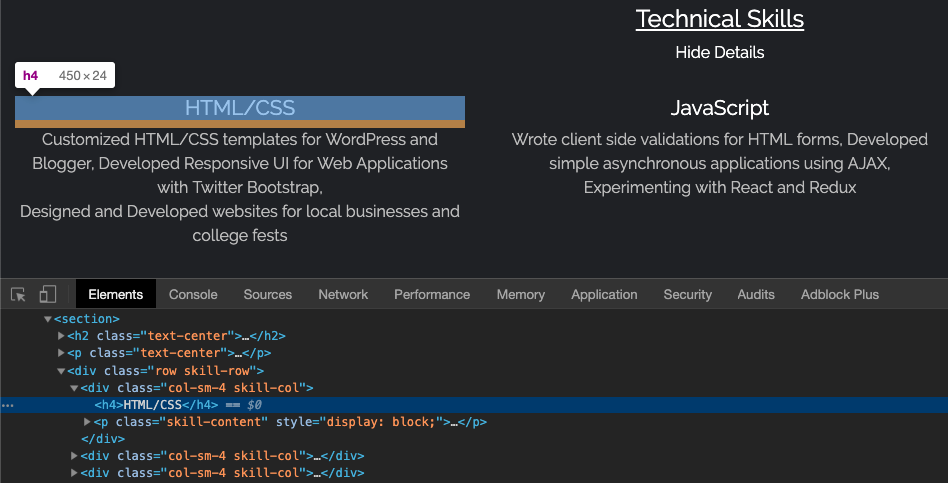
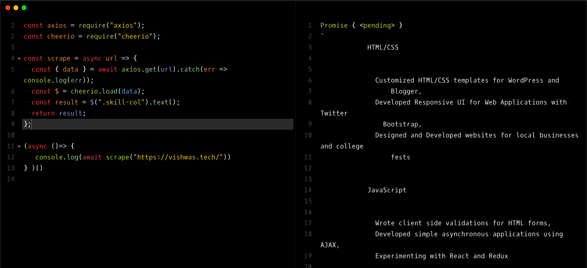
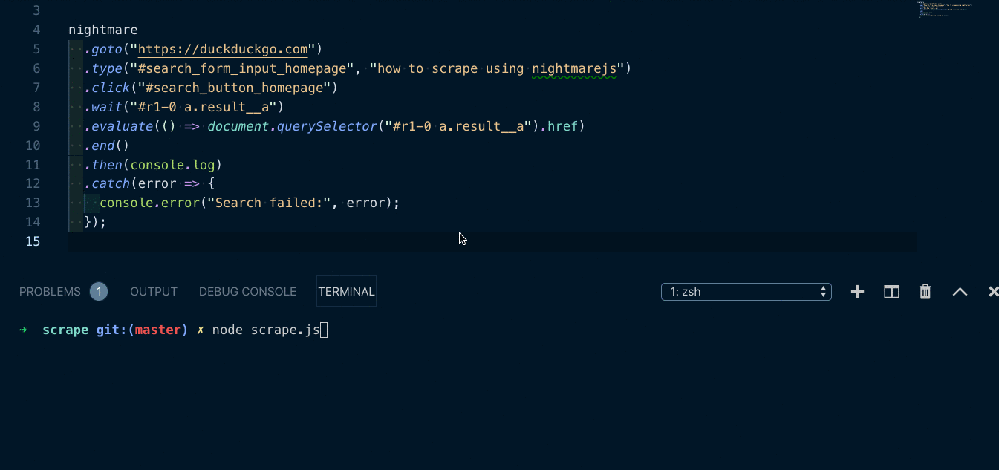

Were you ever been in a situation where you had to fetch a lot of data from a website manually or to extract a small piece of information from a website which did not have an API? If so, all you need is a scraper that can complete those tasks for you.
What's a web scraper?
A web scraper is a program that helps to extract information from the webpage or the whole web page itself. It is very useful when you need to get a dump of data from a website that does not have an open API. Note that not all the websites allow users to scrape data from their website, so use it cautiously.
Scraping Static/Server Rendered webpages
Static/Server rendered webpages will already have the content loaded as a plain HTML format when you are viewing it. So when you to go to view-source:https://webpage.com you will get to see the actual content you need to fetch. This makes your work easy, all you need to do is to check the class/id names of the data you need to fetch. For example, in the current version of my homepage, I have my skills listed in the classes skill-row, skill-col and skill-content.

To extract data from those classes , we will use libraries like axios and cheerio. To begin, npm install the libraries.
npm install --save axios cheerio
Axios is just an HTTP client that we use to fetch the webpage content. You can also use libraries like request or inbuilt fetch function. Once you have the site content, you just need to load it into cheerio. The best thing about cheerio is that it is an implementation of JQuery which enables you to find the HTML tags/attributes from the website very easily.
You can use functions like .html(),.text(),.attr(),.find() etc. with the loaded content to extract the data.

Above code is available in this gist.
Scraping client rendered pages
Cheerio is efficient in parsing HTML pages, but when you try to scrape the web pages that are built with Angular, React, etc. which are client-side rendered or a site which has elements that gets loaded through a script after some user interaction, all you get is the initial HTML content to which actual content gets loaded after you open it in a browser.
For such scenarios, we need to get the HTML after javascript gets executed in the client browser. That's when you need to use a headless browser, which can simulate the client site render and gets you the actual content. There are libraries like puppeteer and nightmarejs which come with a headless chromium instance to enable user interactions and scraping. In this tutorial, I will show you how to extract content from a website after simulating user input using Nightmarejs.
Let's say you want to get the first result of a certain search on duckduckgo.com. Nightmarejs being an automation library, has very developer-friendly functions to automate and extract data. Now, we need our script to visit DuckDuckGo homepage, type the search string and once the search results load, fetch the link of the first result.
const Nightmare = require('nightmare');
const nightmare = Nightmare({ show: true });
nightmare
.goto('https://duckduckgo.com')
.type('#search_form_input_homepage', 'how to scrape using nightmarejs')
.click('#search_button_homepage')
.wait('#r1-0 a.result__a')
.evaluate(() => document.querySelector('#r1-0 a.result__a').href)
.end()
.then(console.log)
.catch((error) => {
console.error('Search failed:', error);
});We can use .type() or .select() to fill the inputs in any website. .wait() method with any class/id will stop the further execution until that particular HTML is loaded. Post that, we can use HTML document object to get specific data that we wanted to extract.
